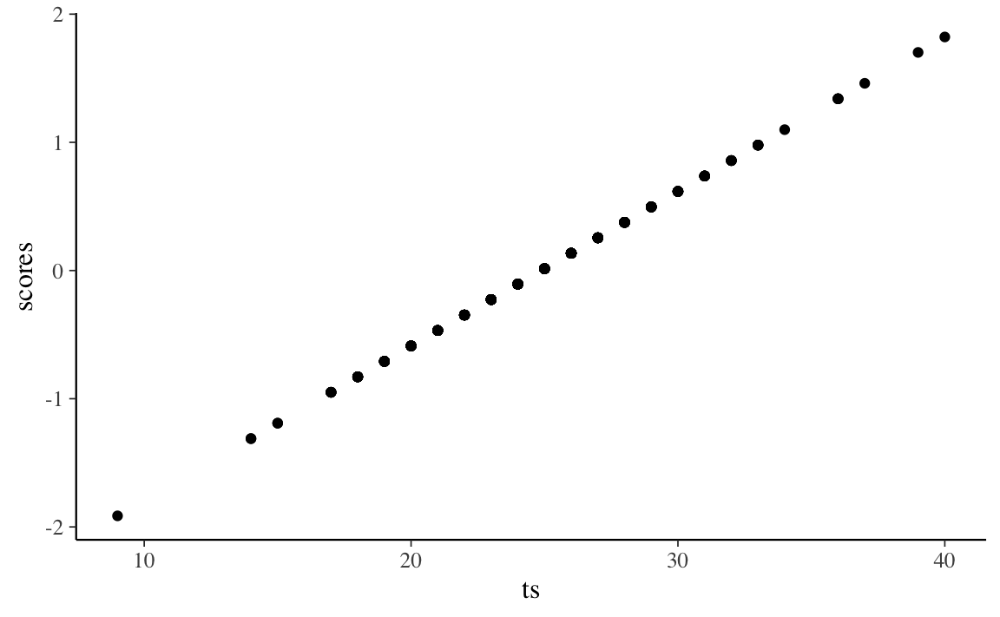
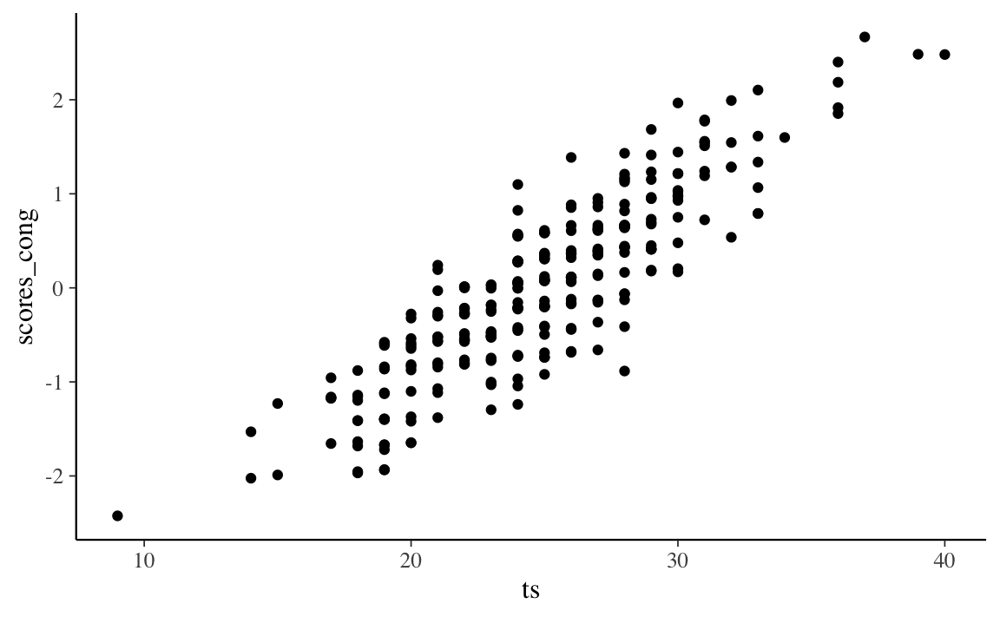
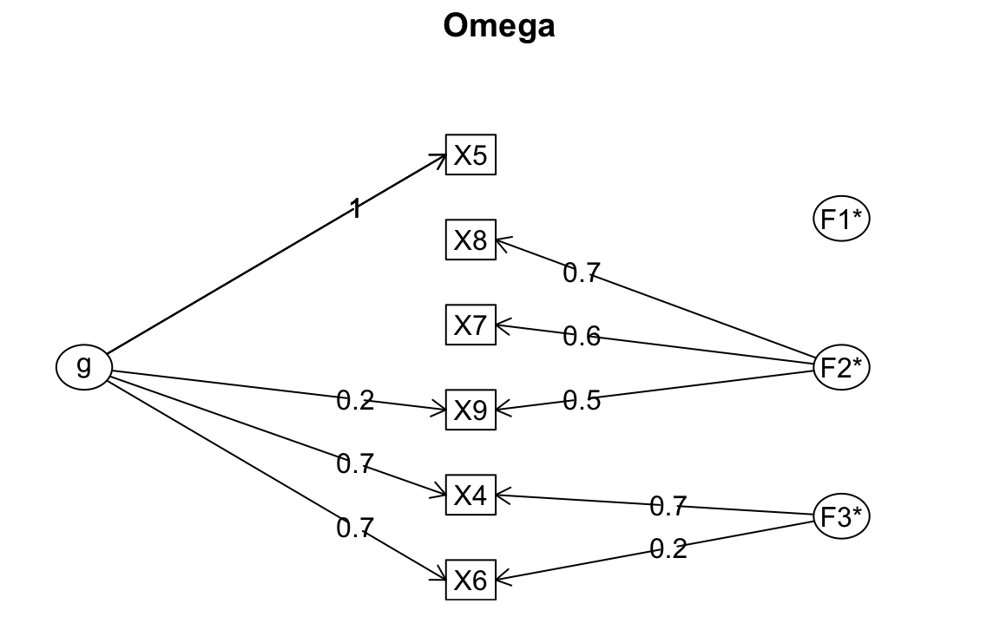

19.7 Punteggio totale e modello fattoriale parallelo
McNeish e Wolf (2020) richiamano l’attenzione sul fatto che usare il punteggio totale quale misura di un costrutto è possibile solo quando i dati soddisfano i vincoli di un modello fattoriale parallelo.
Consideriamo l’esempio seguente, nel quale McNeish e Wolf (2020) esaminano i dati “classici” di Holzinger and Swineford (1939), i quali si riferiscono ai seguenti item:
- Paragraph comprehension
- Sentence completion
- Word definitions
- Speeded addition
- Speeded dot counting
- Discrimination between curved and straight letters
Leggiamo i dati in R.
McNeish e Wolf (2020) sottolineano il fatto che il punteggio totale
\[ \text{Punteggio totale} = \text{Item 1 + Item 2 + Item 3 + Item 4 + Item 5 + Item 6} \]
rappresenta l’idea che ciasun item fornisca la stessa quantità di informazione relativamente alla misura del costrutto. Ciò può essere specificato da un modello fattoriale nel quale le saturazioni fattoriali degli item sono tutte uguali a 1. Questo corrisponde al modello parallelo che abbiamo discusso in precedenza. In tali circostanze, i punteggi fattoriali del test risultano perfettamente associati al punteggio totale (correlazione uguale a 1). Dunque, se tale modello fattoriale è giustificato dai dati, questo giustifica l’uso del punteggio totale del test quale misura del costrutto.
È facile verificare tali affermazioni. Implementiamo il modello parallelo.
m_parallel <-
"
# all loadings are fixed to one
f1 =~ 1*X4 + 1*X5 + 1*X6 + 1*X7 + 1*X8 + 1*X9
# all residual variances constrained to same value
X4 ~~ theta*X4
X5 ~~ theta*X5
X6 ~~ theta*X6
X7 ~~ theta*X7
X8 ~~ theta*X8
X9 ~~ theta*X9
"Adattiamo il modello parallelo ai dati forniti dagli autori.
Calcoliamo il punteggio totale.
Calcoliamo i punteggi fattoriali.
Un diagramma a dispersione tra il punteggio totale e i punteggi fattoriali conferma che i due sono perfettamente associati. Quindi, usare il punteggio totale o i punteggi fattoriali è equivalente.

Tuttavia, questa conclusione è valida solo se il modello parallelo è giustificato per i dati. Se esaminiamo l’output di lavaan vediamo che, nel caso presente, questo non è vero.
# report output with fit measures and standardized estimates
summary(fit_parallel, fit.measures = TRUE, standardized = TRUE)
#> lavaan 0.6.15 ended normally after 13 iterations
#>
#> Estimator ML
#> Optimization method NLMINB
#> Number of model parameters 7
#> Number of equality constraints 5
#>
#> Number of observations 301
#>
#> Model Test User Model:
#>
#> Test statistic 325.899
#> Degrees of freedom 19
#> P-value (Chi-square) 0.000
#>
#> Model Test Baseline Model:
#>
#> Test statistic 568.519
#> Degrees of freedom 15
#> P-value 0.000
#>
#> User Model versus Baseline Model:
#>
#> Comparative Fit Index (CFI) 0.446
#> Tucker-Lewis Index (TLI) 0.562
#>
#> Loglikelihood and Information Criteria:
#>
#> Loglikelihood user model (H0) -2680.931
#> Loglikelihood unrestricted model (H1) -2517.981
#>
#> Akaike (AIC) 5365.862
#> Bayesian (BIC) 5373.276
#> Sample-size adjusted Bayesian (SABIC) 5366.933
#>
#> Root Mean Square Error of Approximation:
#>
#> RMSEA 0.232
#> 90 Percent confidence interval - lower 0.210
#> 90 Percent confidence interval - upper 0.254
#> P-value H_0: RMSEA <= 0.050 0.000
#> P-value H_0: RMSEA >= 0.080 1.000
#>
#> Standardized Root Mean Square Residual:
#>
#> SRMR 0.206
#>
#> Parameter Estimates:
#>
#> Standard errors Standard
#> Information Expected
#> Information saturated (h1) model Structured
#>
#> Latent Variables:
#> Estimate Std.Err z-value P(>|z|) Std.lv Std.all
#> f1 =~
#> X4 1.000 0.633 0.551
#> X5 1.000 0.633 0.551
#> X6 1.000 0.633 0.551
#> X7 1.000 0.633 0.551
#> X8 1.000 0.633 0.551
#> X9 1.000 0.633 0.551
#>
#> Variances:
#> Estimate Std.Err z-value P(>|z|) Std.lv Std.all
#> .X4 (thet) 0.920 0.034 27.432 0.000 0.920 0.697
#> .X5 (thet) 0.920 0.034 27.432 0.000 0.920 0.697
#> .X6 (thet) 0.920 0.034 27.432 0.000 0.920 0.697
#> .X7 (thet) 0.920 0.034 27.432 0.000 0.920 0.697
#> .X8 (thet) 0.920 0.034 27.432 0.000 0.920 0.697
#> .X9 (thet) 0.920 0.034 27.432 0.000 0.920 0.697
#> f1 0.400 0.045 8.803 0.000 1.000 1.000Dunque, per questi dati, il punteggio totale può ovviamente essere calcolato. Ma non fornisce una misura adeguata del costrutto. Dunque, il punteggio totale non dovrebbe essere usato nel caso dei dati ottenuti con questo test.
Gli autori adattano ai dati un modello congenerico.
m_congeneric <-
"
#all loadings are uniquely estimated
f1 =~ NA*X4 + X5 + X6 + X7 + X8 + X9
#constrain factor variance to 1
f1 ~~ 1*f1
"parameterEstimates(fit_congeneric, standardized = TRUE) %>%
dplyr::filter(op == "=~") %>%
dplyr::select(
"Latent Factor" = lhs,
Indicator = rhs,
B = est,
SE = se,
Z = z,
"p-value" = pvalue,
Beta = std.all
) %>%
knitr::kable(
digits = 3, booktabs = TRUE, format = "markdown",
caption = "Factor Loadings"
)| Latent Factor | Indicator | B | SE | Z | p-value | Beta |
|---|---|---|---|---|---|---|
| f1 | X4 | 0.963 | 0.059 | 16.274 | 0.000 | 0.824 |
| f1 | X5 | 1.121 | 0.067 | 16.835 | 0.000 | 0.846 |
| f1 | X6 | 0.894 | 0.058 | 15.450 | 0.000 | 0.792 |
| f1 | X7 | 0.195 | 0.071 | 2.767 | 0.006 | 0.170 |
| f1 | X8 | 0.185 | 0.063 | 2.938 | 0.003 | 0.180 |
| f1 | X9 | 0.278 | 0.065 | 4.245 | 0.000 | 0.258 |
Si noti che le saturazioni fattoriali standardizzate sono molto diverse tra loro, suggerendo che il punteggio del costrutto si relaziona in modo diverso con ciascun item e che sarebbe inappropriato stimare il punteggio del costrutto assegnando un peso unitario agli item.
McNeish e Wolf (2020) calcolano poi i punteggi fattoriali del modello congenerico.
scores_cong <- lavPredict(fit_congeneric, method = "regression")
d$scores_cong <- as.numeric(scores_cong)Il grafico seguente mostra la relazione tra i punteggi fattoriali e il punteggio totale.

Nel caso presente, il coefficiente di determinazione tra punteggio totale e punteggi fattoriali è 0.77.
Secondo gli autori, ciò significa che due persone con un punteggio totale identico potrebbero avere punteggi di modello congenerico potenzialmente diversi perché hanno raggiunto il loro particolare punteggio totale approvando item diversi. Poiché il modello congenerico assegna pesi diversi agli item, ciascun item contribuisce in modo diverso al punteggio fattoriale del modello congenerico, il che non è vero per il punteggio totale.
Si noti che, per i dati di Holzinger and Swineford (1939), neppure un modello congenerico ad un fattore si dimostra adeguato.
summary(fit_congeneric, fit.measures = TRUE, standardized = TRUE)
#> lavaan 0.6.15 ended normally after 16 iterations
#>
#> Estimator ML
#> Optimization method NLMINB
#> Number of model parameters 12
#>
#> Number of observations 301
#>
#> Model Test User Model:
#>
#> Test statistic 115.366
#> Degrees of freedom 9
#> P-value (Chi-square) 0.000
#>
#> Model Test Baseline Model:
#>
#> Test statistic 568.519
#> Degrees of freedom 15
#> P-value 0.000
#>
#> User Model versus Baseline Model:
#>
#> Comparative Fit Index (CFI) 0.808
#> Tucker-Lewis Index (TLI) 0.680
#>
#> Loglikelihood and Information Criteria:
#>
#> Loglikelihood user model (H0) -2575.664
#> Loglikelihood unrestricted model (H1) -2517.981
#>
#> Akaike (AIC) 5175.328
#> Bayesian (BIC) 5219.813
#> Sample-size adjusted Bayesian (SABIC) 5181.756
#>
#> Root Mean Square Error of Approximation:
#>
#> RMSEA 0.198
#> 90 Percent confidence interval - lower 0.167
#> 90 Percent confidence interval - upper 0.231
#> P-value H_0: RMSEA <= 0.050 0.000
#> P-value H_0: RMSEA >= 0.080 1.000
#>
#> Standardized Root Mean Square Residual:
#>
#> SRMR 0.129
#>
#> Parameter Estimates:
#>
#> Standard errors Standard
#> Information Expected
#> Information saturated (h1) model Structured
#>
#> Latent Variables:
#> Estimate Std.Err z-value P(>|z|) Std.lv Std.all
#> f1 =~
#> X4 0.963 0.059 16.274 0.000 0.963 0.824
#> X5 1.121 0.067 16.835 0.000 1.121 0.846
#> X6 0.894 0.058 15.450 0.000 0.894 0.792
#> X7 0.195 0.071 2.767 0.006 0.195 0.170
#> X8 0.185 0.063 2.938 0.003 0.185 0.180
#> X9 0.278 0.065 4.245 0.000 0.278 0.258
#>
#> Variances:
#> Estimate Std.Err z-value P(>|z|) Std.lv Std.all
#> f1 1.000 1.000 1.000
#> .X4 0.437 0.056 7.775 0.000 0.437 0.320
#> .X5 0.500 0.071 6.998 0.000 0.500 0.285
#> .X6 0.474 0.054 8.777 0.000 0.474 0.372
#> .X7 1.278 0.105 12.211 0.000 1.278 0.971
#> .X8 1.023 0.084 12.204 0.000 1.023 0.967
#> .X9 1.080 0.089 12.132 0.000 1.080 0.933Trascurando le considerazioni sulla struttura fattoriale e esaminando, per esempio, unicamente il coefficiente omega, finiamo per trovare una risposta accettabile, ma sbagliata.

#> Omega
#> Call: omegah(m = m, nfactors = nfactors, fm = fm, key = key, flip = flip,
#> digits = digits, title = title, sl = sl, labels = labels,
#> plot = plot, n.obs = n.obs, rotate = rotate, Phi = Phi, option = option,
#> covar = covar)
#> Alpha: 0.72
#> G.6: 0.76
#> Omega Hierarchical: 0.55
#> Omega H asymptotic: 0.65
#> Omega Total 0.84
#>
#> Schmid Leiman Factor loadings greater than 0.2
#> g F1* F2* F3* h2 u2 p2
#> X4 0.73 0.68 1.00 0.00 0.53
#> X5 0.96 0.92 0.08 1.00
#> X6 0.69 0.22 0.54 0.46 0.90
#> X7 0.56 0.33 0.67 0.03
#> X8 0.75 0.59 0.41 0.05
#> X9 0.22 0.49 0.29 0.71 0.16
#>
#> With Sums of squares of:
#> g F1* F2* F3*
#> 2.02 0.00 1.11 0.54
#>
#> general/max 1.82 max/min = 257.39
#> mean percent general = 0.44 with sd = 0.43 and cv of 0.97
#> Explained Common Variance of the general factor = 0.55
#>
#> The degrees of freedom are 0 and the fit is 0
#> The number of observations was 301 with Chi Square = 0.03 with prob < NA
#> The root mean square of the residuals is 0
#> The df corrected root mean square of the residuals is NA
#>
#> Compare this with the adequacy of just a general factor and no group factors
#> The degrees of freedom for just the general factor are 9 and the fit is 0.48
#> The number of observations was 301 with Chi Square = 142.26 with prob < 3.5e-26
#> The root mean square of the residuals is 0.17
#> The df corrected root mean square of the residuals is 0.21
#>
#> RMSEA index = 0.222 and the 10 % confidence intervals are 0.191 0.255
#> BIC = 90.9
#>
#> Measures of factor score adequacy
#> g F1* F2* F3*
#> Correlation of scores with factors 0.96 0.08 0.83 0.96
#> Multiple R square of scores with factors 0.93 0.01 0.68 0.91
#> Minimum correlation of factor score estimates 0.86 -0.99 0.36 0.83
#>
#> Total, General and Subset omega for each subset
#> g F1* F2* F3*
#> Omega total for total scores and subscales 0.84 0.92 0.66 0.86
#> Omega general for total scores and subscales 0.55 0.92 0.04 0.61
#> Omega group for total scores and subscales 0.27 0.00 0.61 0.25È invece necessario ipotizzare un modello congenerico a due fattori.
m2f_cong <- "
# all loadings are uniquely estimated on each factor
f1 =~ NA*X4 + X5 + X6
f2 =~ NA*X7 + X8 + X9
# constrain factor variancse to 1
f1 ~~ 1*f1
f2 ~~ 1*f2
# estimate factor covariance
f1 ~~ f2
"Solo questo modello fornisce un adattamento adeguato ai dati.
summary(fit_2f_congeneric, fit.measures = TRUE, standardized = TRUE)
#> lavaan 0.6.15 ended normally after 18 iterations
#>
#> Estimator ML
#> Optimization method NLMINB
#> Number of model parameters 13
#>
#> Number of observations 301
#>
#> Model Test User Model:
#>
#> Test statistic 14.736
#> Degrees of freedom 8
#> P-value (Chi-square) 0.064
#>
#> Model Test Baseline Model:
#>
#> Test statistic 568.519
#> Degrees of freedom 15
#> P-value 0.000
#>
#> User Model versus Baseline Model:
#>
#> Comparative Fit Index (CFI) 0.988
#> Tucker-Lewis Index (TLI) 0.977
#>
#> Loglikelihood and Information Criteria:
#>
#> Loglikelihood user model (H0) -2525.349
#> Loglikelihood unrestricted model (H1) -2517.981
#>
#> Akaike (AIC) 5076.698
#> Bayesian (BIC) 5124.891
#> Sample-size adjusted Bayesian (SABIC) 5083.662
#>
#> Root Mean Square Error of Approximation:
#>
#> RMSEA 0.053
#> 90 Percent confidence interval - lower 0.000
#> 90 Percent confidence interval - upper 0.095
#> P-value H_0: RMSEA <= 0.050 0.402
#> P-value H_0: RMSEA >= 0.080 0.159
#>
#> Standardized Root Mean Square Residual:
#>
#> SRMR 0.035
#>
#> Parameter Estimates:
#>
#> Standard errors Standard
#> Information Expected
#> Information saturated (h1) model Structured
#>
#> Latent Variables:
#> Estimate Std.Err z-value P(>|z|) Std.lv Std.all
#> f1 =~
#> X4 0.965 0.059 16.296 0.000 0.965 0.826
#> X5 1.123 0.067 16.845 0.000 1.123 0.847
#> X6 0.895 0.058 15.465 0.000 0.895 0.793
#> f2 =~
#> X7 0.659 0.080 8.218 0.000 0.659 0.575
#> X8 0.733 0.077 9.532 0.000 0.733 0.712
#> X9 0.599 0.075 8.025 0.000 0.599 0.557
#>
#> Covariances:
#> Estimate Std.Err z-value P(>|z|) Std.lv Std.all
#> f1 ~~
#> f2 0.275 0.072 3.813 0.000 0.275 0.275
#>
#> Variances:
#> Estimate Std.Err z-value P(>|z|) Std.lv Std.all
#> f1 1.000 1.000 1.000
#> f2 1.000 1.000 1.000
#> .X4 0.433 0.056 7.679 0.000 0.433 0.318
#> .X5 0.496 0.072 6.892 0.000 0.496 0.282
#> .X6 0.472 0.054 8.732 0.000 0.472 0.371
#> .X7 0.881 0.100 8.807 0.000 0.881 0.670
#> .X8 0.521 0.094 5.534 0.000 0.521 0.492
#> .X9 0.798 0.087 9.162 0.000 0.798 0.689